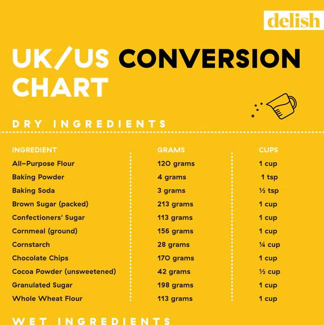

The first time I tried to bake a French recipe, I almost cried. The ingredients were in grams. That was fine. I have a scale. But the butter was measured in something called "European style" and the flour was type 55 and the yeast was fresh not dry. I had no idea what any of that meant. The cake came out dense and weird. I blamed the recipe. Later I realized the recipe was fine. I was the problem. I didn't understand how to translate between measurement systems.
International recipes are a scaling nightmare if you don't know the conversions. A UK tablespoon is different from a US tablespoon. An Australian cup is different from a Japanese cup. An Italian recipe might call for "un bicchiere" which means a glass, which is not a standard measurement at all. I've learned to navigate this chaos through trial and error. Here's what works.
The first rule is to convert everything to grams before you do anything else. Grams are universal. A gram in France is the same as a gram in Japan. If you start with grams, you don't have to worry about cups, tablespoons, or any other volume measurement. The only challenge is getting the gram measurements from the original recipe.
Most international recipes already use grams. Europe, Australia, and most of Asia use metric weights. If a recipe is in grams, you're golden. Just scale it using the same math you always use. The exponents for leavening and salt still apply. The only difference is that you might need to convert the oven temperature from Celsius to Fahrenheit if you're in the US.
Celsius to Fahrenheit is simple. Multiply by 9, divide by 5, add 32. 180 degrees Celsius is 180 times 9 divided by 5 plus 32 equals 356 degrees Fahrenheit. Most US ovens round to 350. That's close enough. For fan ovens, which are common in Europe, you need to reduce the temperature by about 20 degrees Celsius or 35 degrees Fahrenheit. A fan oven circulates air, so it bakes faster and more evenly. If a recipe says 180 degrees Celsius with fan, use 350 Fahrenheit without fan, or 330 Fahrenheit if your oven has a convection setting.
The tricky part is when recipes use volume measurements from other countries. A US cup is 240 milliliters. A UK cup is 250 milliliters. An Australian cup is 250 milliliters. A Japanese cup is 200 milliliters. If you use a US cup for a UK recipe, you're off by about 4%. That's usually fine for most baking. But for precise things like macarons or angel food cake, it matters. I always convert cups to milliliters first, then to grams using density.
A UK tablespoon is 15 milliliters. A US tablespoon is 14.8 milliliters. That's close enough that most people don't notice. But an Australian tablespoon is 20 milliliters. That's a significant difference. If you're scaling an Australian recipe that calls for 2 tablespoons of baking powder, and you use US tablespoons, you're using about 25% less than intended. That could affect the rise.
I learned this from an Australian friend who gave me her family's scone recipe. The scones came out flat. I thought I had done something wrong. She watched me make them and said, "Your tablespoon is too small." I had no idea. Now I ask where the recipe is from before I measure.
Another international scaling challenge is flour types. Different countries have different flour classifications. French type 55 flour is similar to US all-purpose but with slightly more protein. Italian 00 flour is very finely ground, similar to pastry flour. UK plain flour is also similar to all-purpose. You can usually substitute one for another without major issues. But when you scale a recipe, the protein difference can become noticeable. A large batch of bread made with US all-purpose instead of French type 55 might be weaker and spread more. I add a tablespoon of vital wheat gluten per 500 grams of flour to compensate.
Butter is another international puzzle. European butter has higher fat content than US butter, about 82% versus 80%. That 2% difference doesn't matter much at small scale. At large scale, like a 6x batch of croissants, it matters. The dough will be slightly softer and might not laminate as well. I use European-style butter for European recipes. It's worth the extra cost.
Egg sizes vary by country. A large egg in the US is about 50 grams. A large egg in the UK is also about 50 grams. A large egg in Australia is about 55 grams. If you're scaling an Australian recipe that calls for 4 large eggs, and you use US large eggs, you're missing 20 grams of egg. That's almost half an egg. For a scaled recipe, that error multiplies. I always weigh my eggs in grams instead of counting them.
Yeast is another variable. US recipes often use instant dry yeast. European recipes might use fresh yeast. Fresh yeast is more active and has a shorter shelf life. The conversion is about 3 parts fresh yeast to 1 part instant dry yeast. If a recipe calls for 30 grams of fresh yeast, use 10 grams of instant dry. When you scale, this ratio stays the same.
I once scaled a German bread recipe that used fresh yeast. I didn't have fresh yeast, so I used instant dry at 1:1. The bread barely rose. I learned that fresh yeast is much more potent. Now I keep fresh yeast in my freezer for international recipes.
Sugar is sugar, mostly. But some countries use caster sugar, which is finer than granulated. Caster sugar dissolves faster, which matters for meringues and some cakes. You can make caster sugar by grinding granulated sugar in a food processor for a few seconds. When scaling, the substitution is 1:1 by weight.
Another challenge is recipe language. "Scant cup" means just under a cup. "Heaping cup" means over a cup. "Knob of butter" means about a tablespoon. "Splash of milk" means maybe 15 milliliters. These vague measurements are impossible to scale precisely. I avoid recipes that use them. If I have to use such a recipe, I make it once at 1x and measure everything in grams as I go. Then I write down the actual weights. That becomes my scaled recipe.
I once made a British sponge cake that called for "a knob of butter" for greasing the pan. I used about 10 grams. The cake stuck. The next time, I used 20 grams. It still stuck. I finally realized the recipe meant to grease the pan AND line it with parchment. The "knob of butter" was just for the parchment to stick. That's not scaling. That's translation.
For international scaling, I rely on my standard tools but with extra attention to units.
Each mistake taught me something about the recipe's home country. French recipes are precise about flour. Australian recipes assume you know their tablespoon is bigger. British recipes are vague about some things and very specific about others. You learn the patterns over time.
Now when I travel, I buy local cookbooks. I bring them home and try to scale the recipes for my family. Some work. Some don't. The ones that work become part of our rotation. My kids have grown up eating Japanese cheesecake, Italian biscotti, and Swedish cardamom buns. They don't know these are international recipes. They just know they're delicious.
That's the goal of scaling international recipes. Not perfection. Connection.
— Olivia
P.S. My Australian friend now sends me recipes with US measurements. She says it's easier than explaining the tablespoon thing every time. I appreciate her.